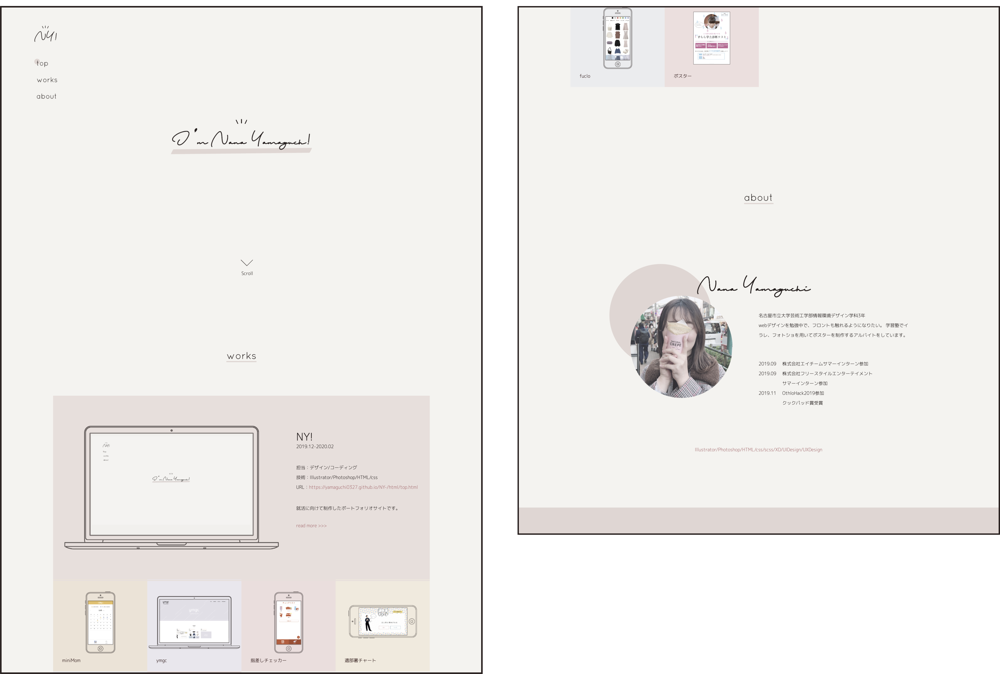
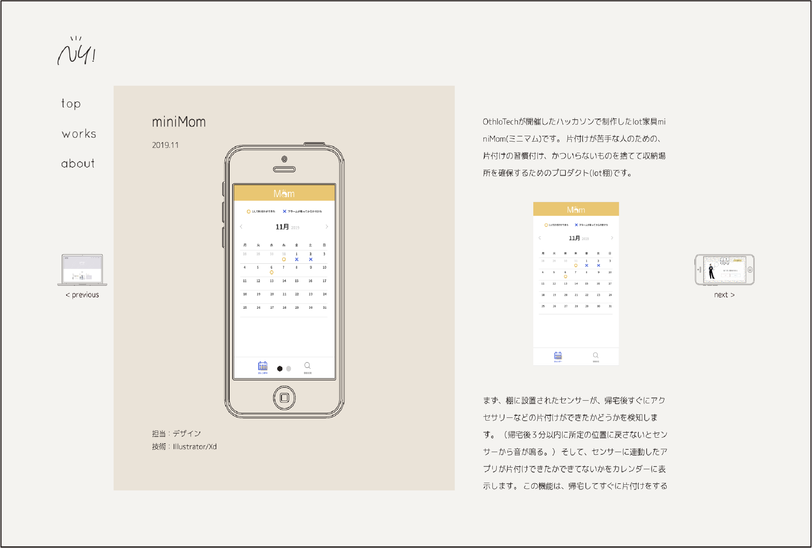

NY!
2019.12-
担当：デザイン/コーディング
技術：Illustrator/Photoshop/HTML/css
就職活動に向けて制作した
ポートフォリオサイトです。
作品の概要
前回のポートフォリオの反省点として、個性がなさすぎる、レスポンシブできていないという2つの課題がありました。
前回のポートフォリオは、作品を際立たせるために非常にシンプルなデザインにしましたが、
インターンでポートフォリオサイトを見ていただいた時に「もう少し個性を出した方が良い」という感想をいただいたので
私らしさを表現しつつ、作品を主張できるようなデザインにしようと考えました。
また、分かりやすく、このサイトを見る人が迷ってしまうことのないようなデザインを常に心がけていました。
コンセプト
私らしさを表現しつつ、作品を主張する
分かりやすく、このサイトを見る人が迷ってしまうことのないようなデザイン
制作フロー
こちらが最初のデザインです。
作品が大きく、シンプルでわかりやすいデザインでしたが自分の個性が全く出ていない事に気付き
このデザインを元に新しくデザインを作りました。

こちらが2つ目のデザインです。
色味やフォントで少し私らしさが出たとは思うのですが、 作品の印象が薄くなってしまったと感じました。
３回目のデザインで完成したのが今回のポートフォリオサイトです。
デザインについて
色
背景色：目に優しく柔らかい印象の白に近いベージュ
メインカラー：私が好きな色であるピンクベージュ
文字色：優しく柔らかい印象を与えるためのこげ茶
作品ごとの背景色：作品の色をメインカラーと同じトーンにした色(作品の個性を出すため)
トップページ
top・works・aboutを1ページで見ることができるような構成にしました。
作品ページ

常に作品を見ながら説明を読んで頂いた方が理解しやすいと思ったので
スプリットスクリーンレイアウトを使用していました。
しかし、作品の説明が長いと読みづらいという問題点がありました。
改善したデザインがこちらです。
見出しを設けることで今何について説明しているのかが分かりやすくなり、
知りたい情報をすぐに見ることができます。
また画面下方の左右には次の作品・前の作品の小さなサムネイルをリンクとしておき、
次の作品への誘導をしています。